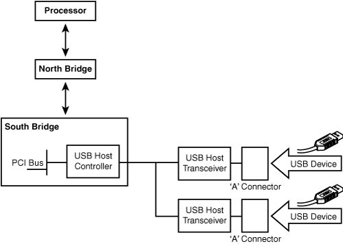
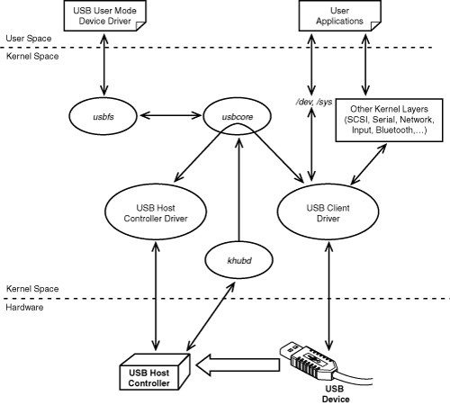
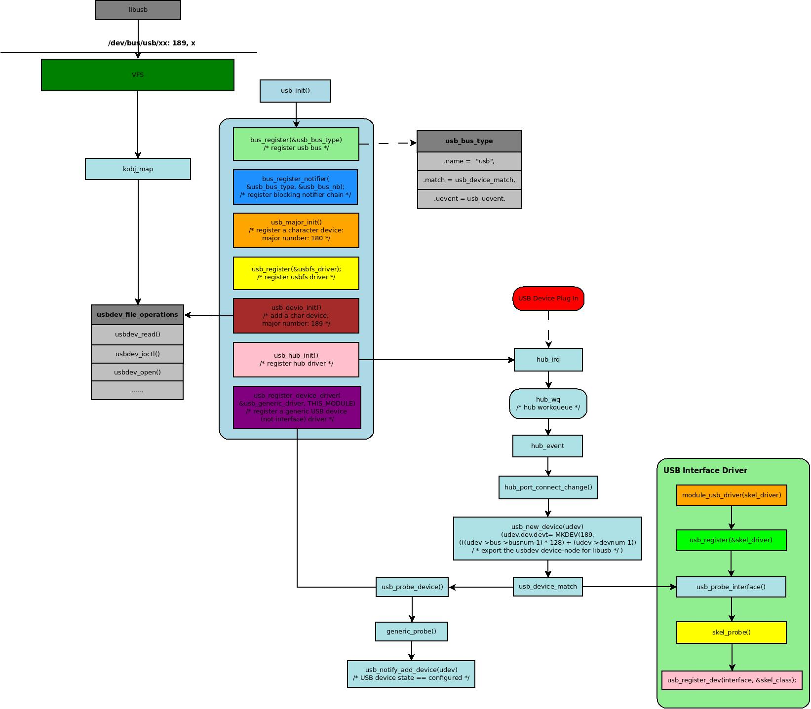
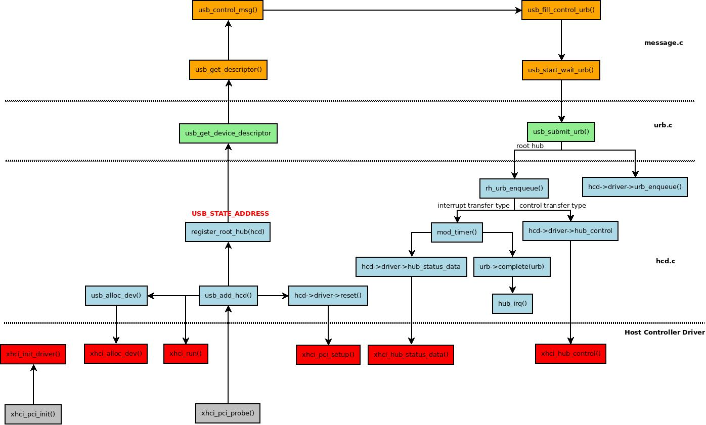
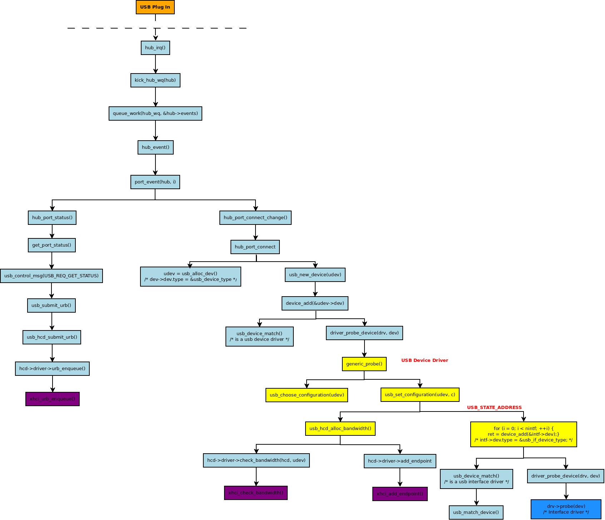
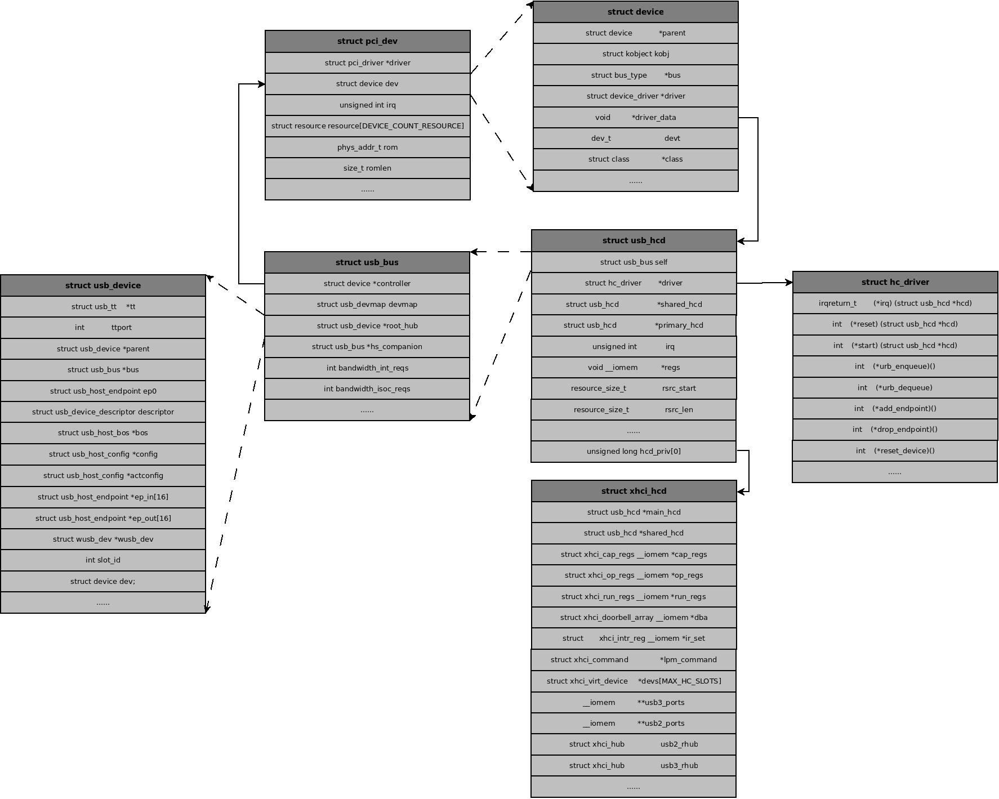

Linux USB Driver
Table of Contents
1 USB Architecture
USB is a master-slave protocol where a host controller communicates with client devices. the following figure shows USB in the PC evironment. The USB host controller is part of the South Bridge chipset and communicates with the processor over the PCI bus1.

Figure 1: USB Architecture In PC Environment
2 Linux-USB Subsystem
The framework of linux usb subsystem as shown in Figure 2, the constituent pieces of the subsystem are as follows:
- 1. The USB Core
- is a code base consisting of routines and structures available to HCDs and client drivers, the core also provides a level of indirection that renders client drivers independent of host controllers.
- 2. HCDs
- to drive different host controllers, these host controllers include EHCI, OHCI, UHCI, xHCI, etc.
- 3. Hub Driver
- to detect port status changes and configuring hotplugged devices,
there are some difference between kernel v4.* and kernel v3.*, in kernel v3.*, a kthread is used to monitor all ports connected to hub, but in kernel v4.x, which has been replaced by work queue.
- 4. Device Driver
- the device for USB client devices.
- 5. The USB filesystem usbfs
- which let you drive USB devices from user space.

Figure 2: Linux USB Subsystem
The initialization process of usb subsystem as shown in Figure 3, a generic device driver will be registered, the driver will be bind to a device when a usb device is detected:

Figure 3: The Process of USB Subsystem Initialization and USB Plug-In
3 USB Host Controller Driver
The USB host controller driver driectly operate the hardware controller to communicate with usb device, here take xHCI as example to show the relationship between each layer:

Figure 4: USB Host Controller Driver
When a new usb device plugged in a port, hub will report the plug-in event to host controller driver, the usb subsystem will get the interface descriptor from it, and a usb_interface object will be allocated for each interface, and it will be bind to a interface driver.

Figure 5: The Process of USB Device Plug-In
4 Struct Relationship
The relationship between structs are as following figure showed:

Figure 6: Struct Relationship